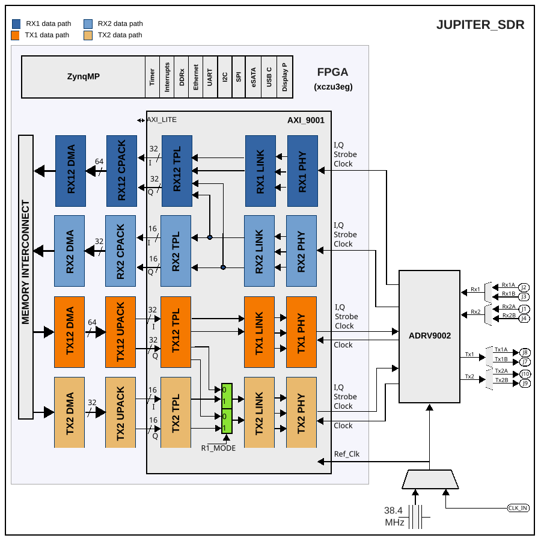

Jupiter SDR HDL Reference Design
This design allows controlling, receiving and transmitting sample stream from/to an ADRV9002 device through two independent source synchronous interface. At the moment, only LVDS interface is supported.
The design supports SDR or DDR modes, one or two lane mode. This is runtime selectable. The complete list of supported adrv9001 modes, can be consulted in the ADRV9001 HDL Project documentation.
Block design
The design has two receive paths and two transmit paths. One of the receive paths (Rx12) has four channels and the other (Rx2) two channels. These can work independently having each two active channels, or just the Rx12 path having four active channels, while Rx2 is disabled. The same applies to the transmit path but in the other direction.
When only the Rx12 path is active with four channels mode the core will take ownership of both source synchronous interfaces. The requirement in this case is that both interfaces run at the same rate.

DAC Interface
Has DDS
Has PRBS generation
ADC Interface
Has PN checking
Has data formater
Has programmable input delay
SW programming
Register map
Address |
IP |
0x44A00000 |
|
0x44A30000 |
|
0x44A40000 |
|
0x44A50000 |
|
0x44A60000 |
|
0x44A70000 |
|
0x45000000 |
SPI connections
SPI manager instance |
Alias |
SPI address |
SPI subordinate |
CSn |
|---|---|---|---|---|
psu spi 0 |
spi_fpga |
0xFF040000 |
ADRV9002 |
0 |
PL Interrupts
Instance |
HDL interrupt |
Linux PsU interrupt |
|---|---|---|
— |
0 |
89 |
— |
1 |
90 |
— |
2 |
91 |
— |
3 |
92 |
— |
4 |
93 |
— |
5 |
94 |
— |
6 |
95 |
— |
7 |
96 |
8 |
104 |
|
pl_sysmon |
9 |
105 |
axi_adrv9002_tx2_dma |
10 |
106 |
axi_adrv9002_tx1_dma |
11 |
107 |
axi_adrv9002_rx2_dma |
12 |
108 |
axi_adrv9002_rx1_dma |
13 |
109 |
— |
14 |
110 |
— |
15 |
111 |
ZYNQ U PS EMIO GPIO signals translation from schematic to GPIO number
Ps8 EMIO offset = 78
HW Signal |
HDL Signal |
PS GPIO |
HDL GPIO EMIOn |
Direction |
|---|---|---|---|---|
IO_L7N_66_FAN_CTL |
fan_ctl |
145 |
67 |
O |
IO_66_USB_FLASH_PROG_EN |
usb_flash_prog_en |
144 |
66 |
O |
IO_L4N_64_ADRV9002_MCSSRC |
adrv9002_mcssrc |
143 |
65 |
O |
– (internal) |
mcs_or_system_sync_n |
142 |
64 |
O |
IO_L1P_T0L_N0_DBC_64 |
add_on_power |
141 |
63 |
O |
IO_L23N_T3U_N9_64 |
add_on_gpio[14] |
140 |
62 |
I/O |
IO_L23P_T3U_N8_64 |
add_on_gpio[13] |
139 |
61 |
I/O |
IO_L21N_T3L_N5_AD8N_64 |
add_on_gpio[12] |
138 |
60 |
I/O |
IO_L21P_T3L_N4_AD8P_64 |
add_on_gpio[11] |
137 |
59 |
I/O |
IO_L2N_T0L_N3_64 |
add_on_gpio[10] |
136 |
58 |
I/O |
IO_L2P_T0L_N2_64 |
add_on_gpio[9] |
135 |
57 |
I/O |
IO_L1N_T0L_N1_DBC_64 |
add_on_gpio[8] |
134 |
56 |
I/O |
IO_L12N_AD0N_26 |
add_on_gpio[7] |
133 |
55 |
I/O |
IO_L12P_AD0P_26 |
add_on_gpio[6] |
132 |
54 |
I/O |
IO_L11N_AD1N_26 |
add_on_gpio[5] |
131 |
53 |
I/O |
IO_L11P_AD1P_26 |
add_on_gpio[4] |
130 |
52 |
I/O |
IO_L10N_AD2N_26 |
add_on_gpio[3] |
129 |
51 |
I/O |
IO_L10P_AD2P_26 |
add_on_gpio[2] |
128 |
50 |
I/O |
IO_L9N_AD3N_26 |
add_on_gpio[1] |
127 |
49 |
I/O |
IO_L9P_AD3P_26 |
add_on_gpio[0] |
126 |
48 |
I/O |
– (internal) |
gpio_rx1_enable_in |
126 |
47 |
I/O |
– (internal) |
gpio_rx2_enable_in |
126 |
46 |
I/O |
– (internal) |
gpio_tx1_enable_in |
126 |
45 |
I/O |
– (internal) |
gpio_tx2_enable_in |
126 |
44 |
I/O |
IO_L18P_64_ADRV 9002_DGPIO_11 |
dgpio[11] |
121 |
43 |
I/O |
IO_L18N_64_ADRV 9002_DGPIO_10 |
dgpio[10] |
120 |
42 |
I/O |
IO_L9N_64_ADRV9002_DGPIO_9 |
dgpio[ 9] |
119 |
41 |
I/O |
IO_L9P_64_ADRV9002_DGPIO_8 |
dgpio[ 8] |
118 |
40 |
I/O |
IO_T2U_N12_64_ADR V9002_DGPIO_7 |
dgpio[ 7] |
117 |
39 |
I/O |
IO_L14N_64_ADRV9002_DGPIO_6 |
dgpio[ 6] |
116 |
38 |
I/O |
IO_L7N_64_ADRV9002_DGPIO_5 |
dgpio[ 5] |
115 |
37 |
I/O |
IO_L7P_64_ADRV9002_DGPIO_4 |
dgpio[ 4] |
114 |
36 |
I/O |
IO_L6N_64_ADRV9002_DGPIO_3 |
dgpio[ 3] |
113 |
35 |
I/O |
IO_L6P_64_ADRV9002_DGPIO_2 |
dgpio[ 2] |
112 |
34 |
I/O |
IO_L5N_64_ADRV9002_DGPIO_1 |
dgpio[ 1] |
111 |
33 |
I/O |
IO_L5P_64_ADRV9002_DGPIO_0 |
dgpio[ 0] |
110 |
32 |
I/O |
IO_L8N_AD4N_26 |
ext_gpio[15] |
109 |
31 |
I/O |
IO_L8P_AD4P_26 |
ext_gpio[14] |
108 |
30 |
I/O |
IO_L7N_AD5N_26 |
ext_gpio[13] |
107 |
29 |
I/O |
IO_L7P_AD5P_26 |
ext_gpio[12] |
106 |
28 |
I/O |
IO_L6N_AD6N_26 |
ext_gpio[11] |
105 |
27 |
I/O |
IO_L6P_AD6P_26 |
ext_gpio[10] |
104 |
26 |
I/O |
IO_L5N_AD7N_26 |
ext_gpio[ 9] |
103 |
25 |
I/O |
IO_L5P_AD7P_26 |
ext_gpio[ 8] |
102 |
24 |
I/O |
IO_L4N_AD8N_26 |
ext_gpio[ 7] |
101 |
23 |
I/O |
IO_L4P_AD8P_26 |
ext_gpio[ 6] |
100 |
22 |
I/O |
IO_L3N_AD9N_26 |
ext_gpio[ 5] |
99 |
21 |
I/O |
IO_L3P_AD9P_26 |
ext_gpio[ 4] |
98 |
20 |
I/O |
IO_L2N_AD10N_26 |
ext_gpio[ 3] |
97 |
19 |
I/O |
IO_L2P_AD10P_26 |
ext_gpio[ 2] |
96 |
18 |
I/O |
IO_L1N_AD11N_26 |
ext_gpio[ 1] |
95 |
17 |
I/O |
IO_L1P_AD11P_26 |
ext_gpio[ 0] |
94 |
16 |
I/O |
IO_L17N_RF_TX2_MUX_CTL2 |
rf_tx2_mux_ctl2 |
93 |
15 |
O |
IO_L17P_RF_TX2_MUX_CTL1 |
rf_tx2_mux_ctl1 |
92 |
14 |
O |
IO_L16N_RF_TX1_MUX_CTL2 |
rf_tx1_mux_ctl2 |
91 |
13 |
O |
IO_L16P_RF_TX1_MUX_CTL1 |
rf_tx1_mux_ctl1 |
90 |
12 |
O |
IO_L13P_RF_RX2B_MUX_CTL |
rf_rx2b_mux_ctl |
89 |
11 |
O |
IO_L14P_RF_RX2A_MUX_CTL |
rf_rx2a_mux_ctl |
88 |
10 |
O |
IO_L15P_RF_RX1B_MUX_CTL |
rf_rx1b_mux_ctl |
87 |
9 |
O |
IO_L15N_RF_RX1A_MUX_CTL |
rf_rx1a_mux_ctl |
86 |
8 |
O |
– (internal) |
mssi_sync |
85 |
7 |
O |
VIN_POE_VALID_N |
vin_poe_valid_n |
84 |
6 |
I |
VIN_USB2_VALID_N |
vin_usb2_valid_n |
83 |
5 |
I |
VIN_USB1_VALID_N |
vin_usb1_valid_n |
82 |
4 |
I |
IO_66_ADRV9002_CLKSRC |
clksrc |
81 |
3 |
O |
IO_65_ADRV9002_MODE |
mode |
80 |
2 |
O |
IO_65_ADRV9002_RST |
resetb |
79 |
1 |
O |
IO_L24P_65_ADRV9002_GP_INT |
gp_int |
78 |
0 |
I |
Resource Utilization of xczu3eg-sfva625-2-e
Resource |
Utilization |
Available |
Utilization % |
|---|---|---|---|
LUT |
25131 |
70560 |
35.62 |
LUTRAM |
1812 |
28800 |
6.29 |
FF |
34789 |
141120 |
24.65 |
BRAM |
4 |
216 |
1.85 |
DSP |
12 |
360 |
3.33 |
IO |
136 |
180 |
75.56 |
BUFG |
13 |
196 |
6.63 |
Source code
Download
The source files can be accessed at:
Building the HDL project
To build the project follow the build documentation.
More Information
Support
Analog Devices will provide limited online support for anyone using the reference design with Analog Devices components via the EngineerZone.